Заливной пирог с рисом, яйцами и зелёным луком

Ингредиенты:
Мука - 100 г.
Сливочное масло - 50 г.
Кефир - 100 мл.
Яйца - 3 шт.
Рис - 30 г.
Разрыхлитель - 1 ч.л.
Соль
Пошаговый рецепт:
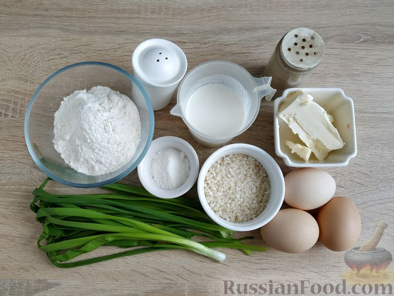
Шаг 1. Подготовьте необходимые ингредиенты. Кефир должен быть комнатной температуры, поэтому заранее достаньте его из холодильника. В процессе приготовления понадобится пергаментная бумага.
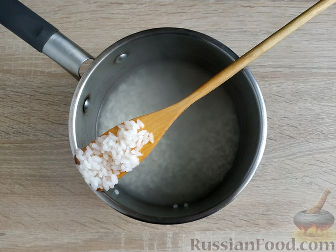
Шаг 2. Рис промойте несколько раз, пока вода не будет оставаться прозрачной. В кипящую подсоленную воду (350 мл) всыпьте промытый рис и отварите его до готовности (около 13 минут на медленном огне).
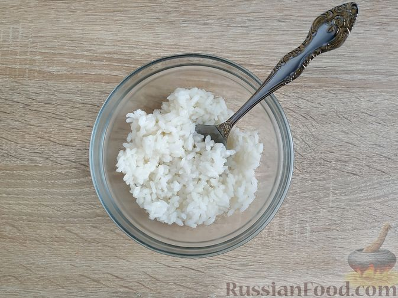
Шаг 3. Готовый рис отбросьте на дуршлаг, затем переложите в миску и оставьте остывать.
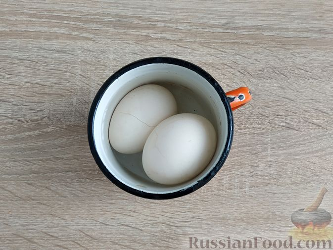
Шаг 4. Параллельно с приготовлением риса отварите вкрутую яйца. Опустите яйца в холодную воду и варите 10 минут после закипания воды.
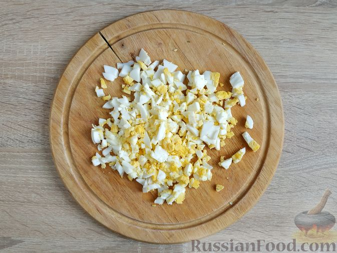
Шаг 5. Остудите яйца в холодной воде, очистите от скорлупы и нарежьте кубиками.
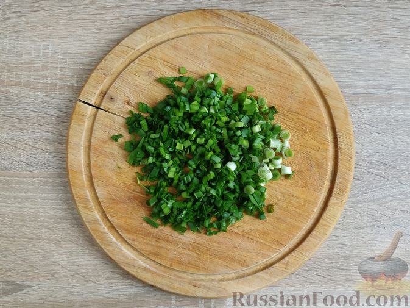
Шаг 6. Зелёный лук промойте, обсушите и нарежьте тонкими колечками.
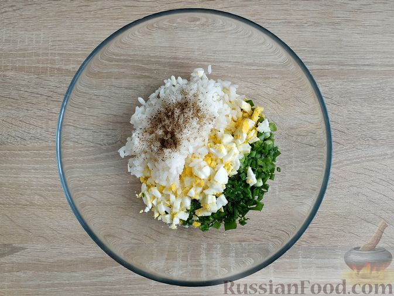
Шаг 7. В миске соедините варёный рис, яйца, лук. Всыпьте соль и чёрный молотый перец по вкусу.
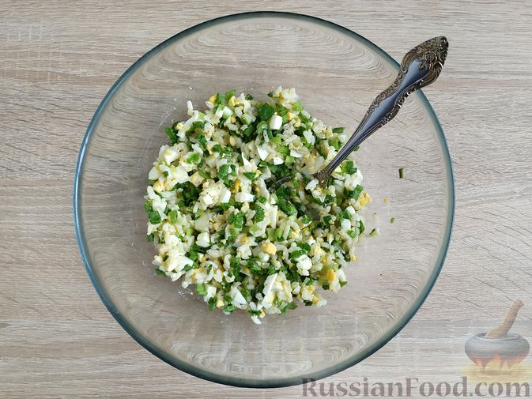
Шаг 8. Перемешайте. Начинка для пирога готова.
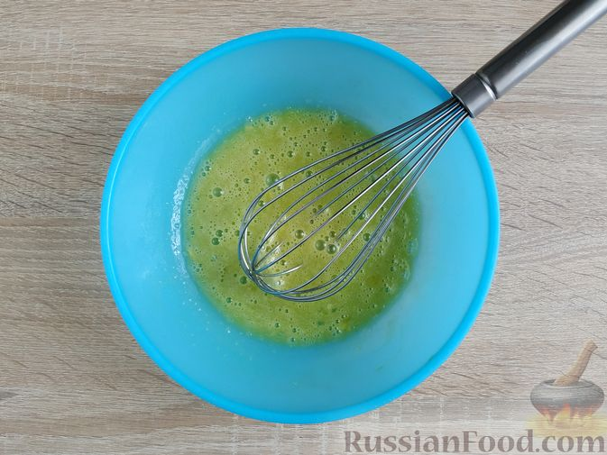
Шаг 9. Разогрейте духовку до 180 градусов. Приготовьте тесто. В миске взболтайте яйцо с 1 щепоткой соли.
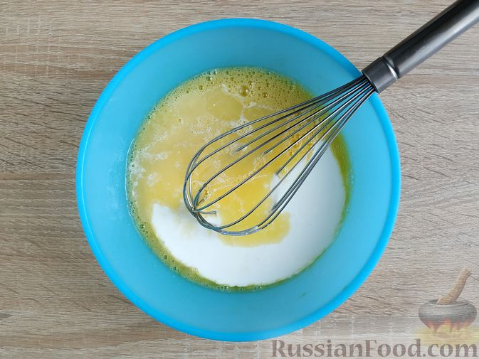
Шаг 10. Сливочное масло растопите на водяной бане или в микроволновке, остудите. Влейте кефир комнатной температуры и растопленное и остывшее сливочное масло.
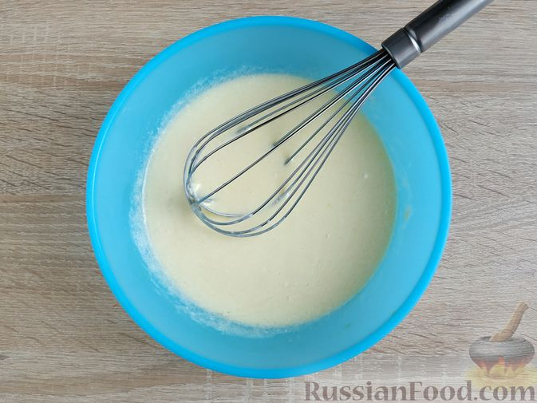
Шаг 11. Перемешайте венчиком до однородности.
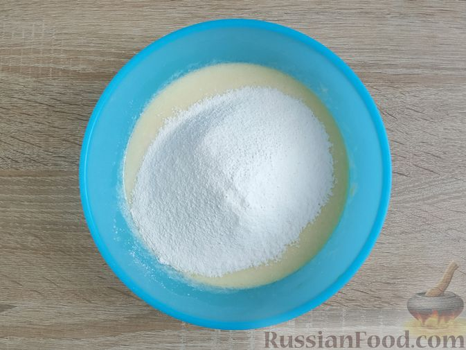
Шаг 12. Муку смешайте с разрыхлителем и просейте в миску с жидкой основой.
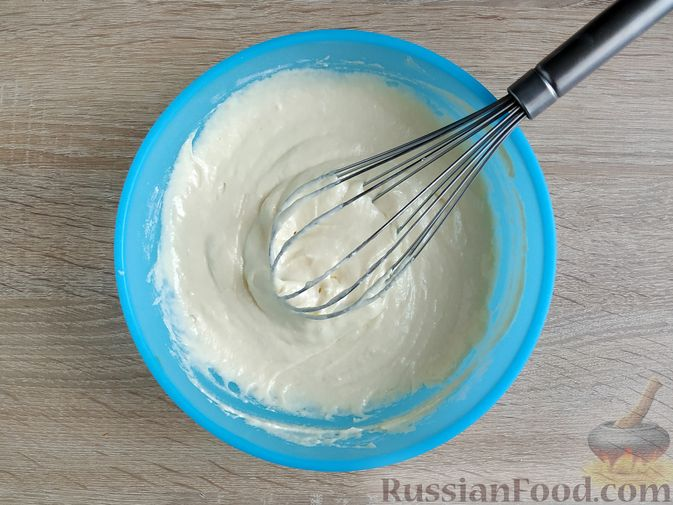
Шаг 13. Замешайте однородное тесто, по консистенции схожее с тестом для оладий.
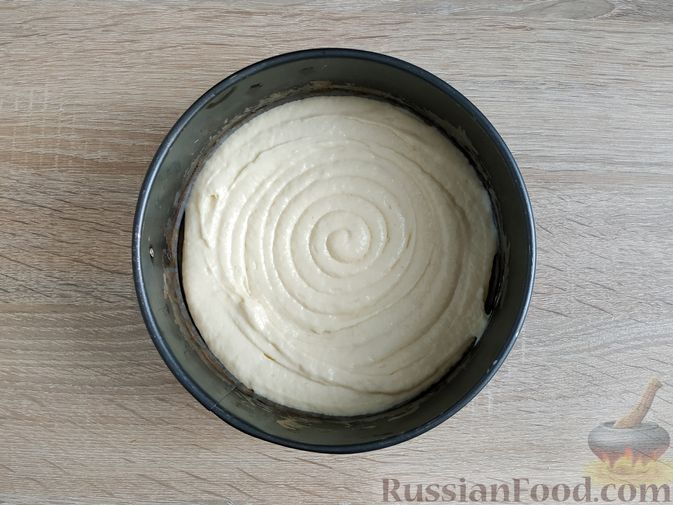
Шаг 14. Дно формы для выпечки выстелите пергаментом и выложите в неё половину теста. (Я использовала разъёмную форму диаметром 18 см.)
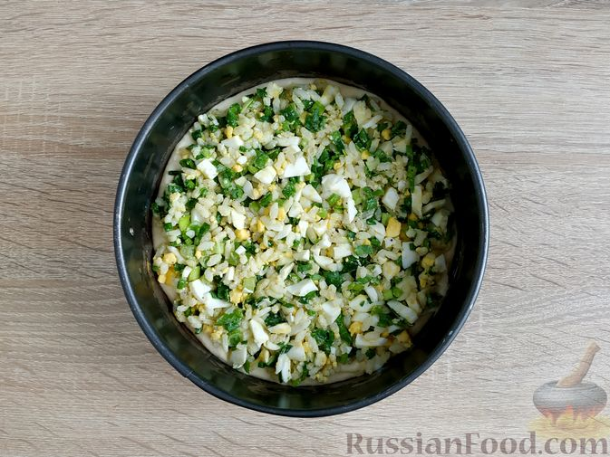
Шаг 15. На тесто выложите начинку, распределяя её по всей поверхности.
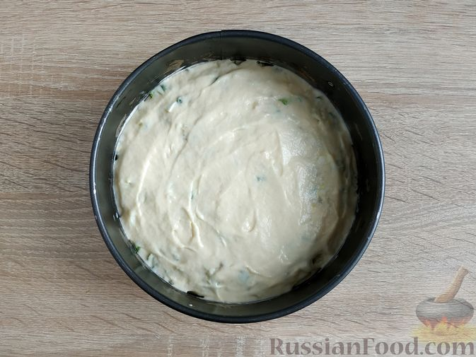
Шаг 16. Сверху выложите вторую часть теста, закрывая начинку.
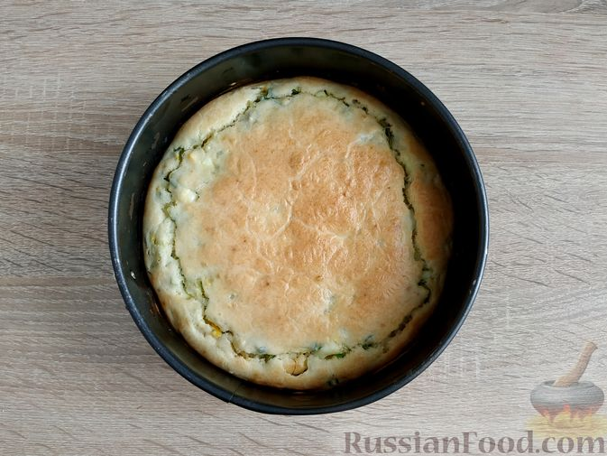
Шаг 17. Выпекайте пирог в предварительно разогретой до 180 градусов духовке 35 минут.
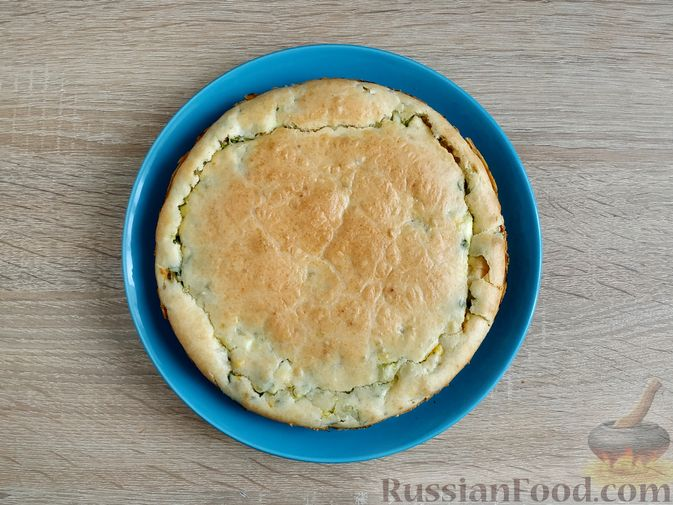
Шаг 18. Готовый пирог извлеките из формы и дайте ему остыть.
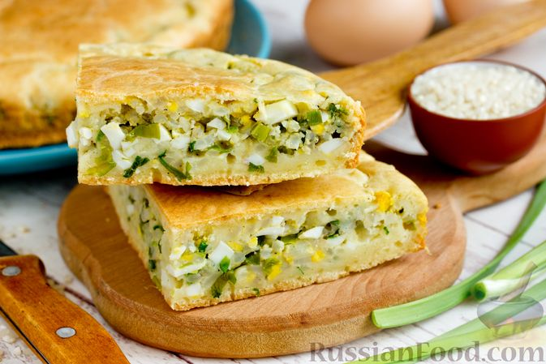
Шаг 19. Разрежьте пирог на порционные куски и подайте к столу.